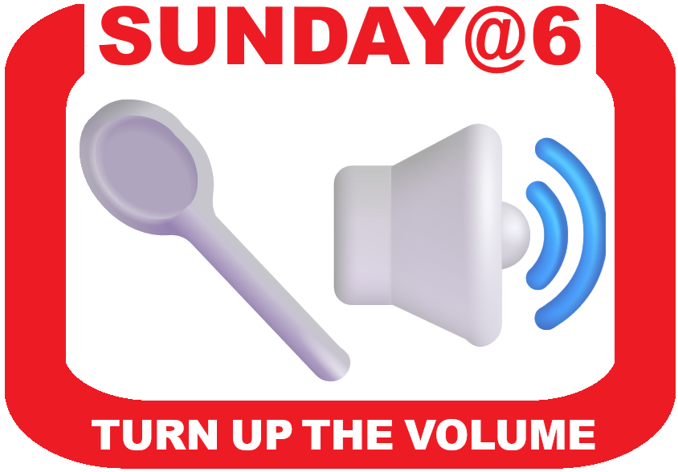
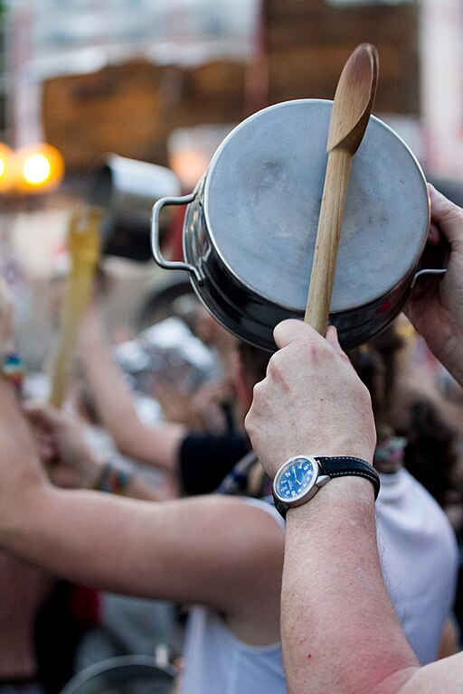

Sunday March 15 at 6 PM, for 60 seconds, let's turn up the volume citywide in support of liberty and justice and against hatred and oppression.
Silence won’t beat tyrants, so join neighbors outdoors on your block or campus: together we'll bang on pots or blow on whistles — a 60-second sound-off, the length of three rounds of This Land Is Your Land.
Sunday at 6, let the message ring out from neighbor to neighbor and neighborhood to neighborhood that our country is supposed to be a democracy with liberty and justice for all — not a dictatorship!
The purpose of Sunday at 6 is to express support for fundamental rights, not to be unneighborly. A 60-second political expression should be tolerable to everyone in a country which values freedom and tolerates MAGA banners displayed 24/7.
Method 2 (a "Sunday at 6" party) Host or attend a get-together with friends on Sunday. Bring spoons, pots, whistles. Turn up the volume at 6 o'clock!
Sunday at 6 is a grassroots action. If you like the sound of it, spread the word!
The sound of spoons banging on pots is heard in protests around the world. In many countries, the percussive protest is called a cacerolazo. In Canada, it’s a casserole. Sunday at 6, let's make a great casserole in 60 seconds!

{kind=link}